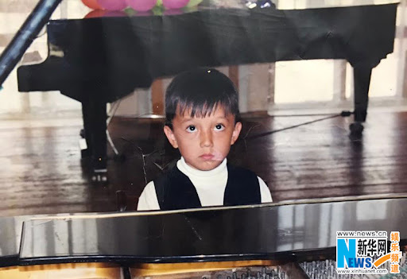

In 2015 he won the Grand Prix of this major competition, scoring 175 points out of a possible 180. His unique voice and vocal range, demonstrated in the original performance of the Kazakh folk song " Дайдидау", the Russian song "A Snowstorm Again" and the French "S.O.S d'un terrien en detresse ", were noted by the jury and made a great impression on the audience. Same year, Dimash, as an outstanding vocal performer, was nominated to represent Kazakhstan at the International Song Festival “ABU TV Song” in Istanbul, Turkey.
 On January 22, 2016, at the “People's Favorite” awards ceremony in Kazakhstan, he received the “Variety Artist” award. In 2017, Dimash won the category “Most Popular Singer in Asia” at the Chinese music award ERC Chinese Top Ten Awards in Shanghai, China, considered the equivalent of the American Grammy Awards.